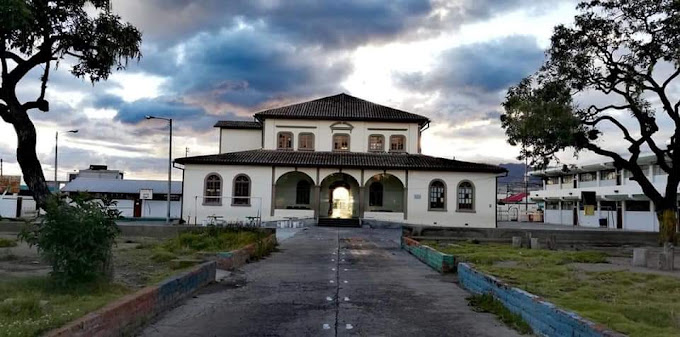
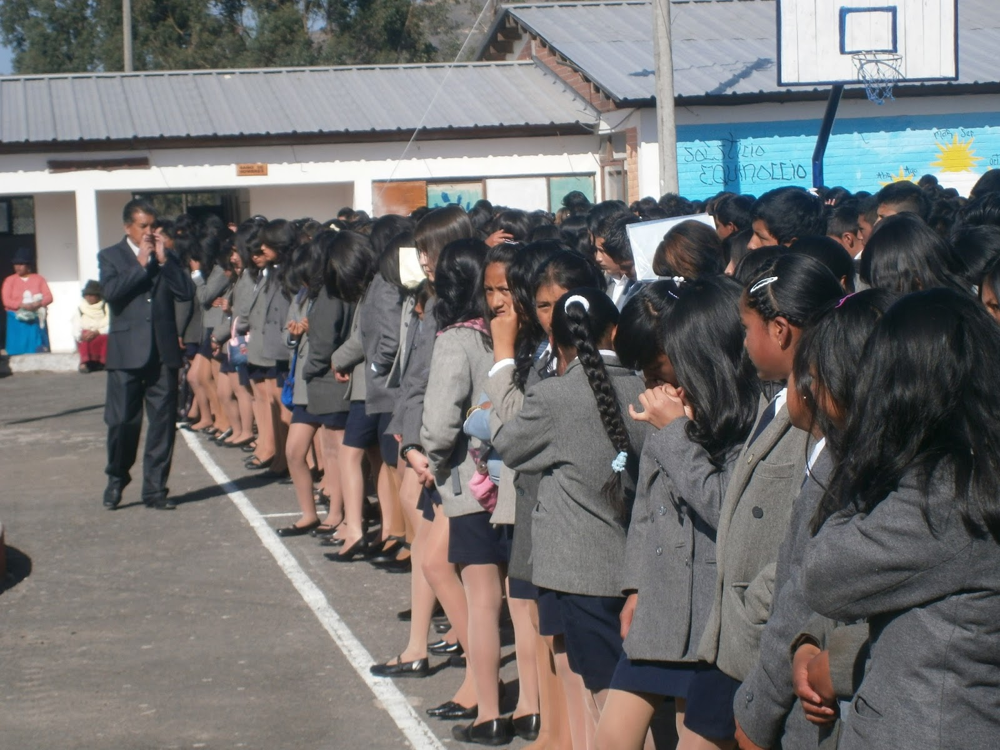

"Mi recorrido académico ha sido una aventura llena de aprendizajes y experiencias enriquecedoras. Todo comenzó en la Escuela Nasacota Puento, donde estudié desde primero de básica hasta octavo. Durante estos años, adquirí las bases de mi educación, desarrollando mis primeras habilidades y conocimientos, así como valores fundamentales como la responsabilidad y el trabajo en equipo.

Escuela de Educacion Básica "Himmelman"
Al llegar a noveno, la modalidad de estudios pasó a ser virtual, lo cual representó un cambio significativo en mi forma de aprender y adaptarme a nuevos métodos. En este período, estuve inscrito en la Escuela Himmelman, donde completé los estudios de noveno y décimo de básica. Esta experiencia me enseñó la importancia de la autogestión, el uso de la tecnología en la educación y la capacidad de mantener la disciplina en un entorno de aprendizaje diferente.

Unidad Educativa "Cayambe"
Cuando ingresé al bachillerato, tomé la decisión de enfocar mi educación en el área de Informática, una especialidad que elegí con entusiasmo en la Unidad Educativa Cayambe. Durante estos años de bachillerato, tuve la oportunidad de profundizar en materias relacionadas con la tecnología, aprender sobre programación y explorar distintas aplicaciones del ámbito informático. Esta etapa no solo me brindó conocimientos técnicos, sino también la oportunidad de trabajar en proyectos prácticos, lo cual consolidó mi interés en el mundo de la tecnología. Además de mis estudios, participé en las brigadas de primeros auxilios, donde adquirí habilidades en atención primaria y cuidado de emergencia. Esta experiencia fue muy gratificante, ya que me permitió contribuir al bienestar de mi comunidad escolar, desarrollar un fuerte sentido de responsabilidad social y mejorar mis habilidades en el trabajo en equipo y la comunicación. A través de cada una de estas etapas, he cultivado un conjunto de conocimientos y valores que han sido esenciales en mi crecimiento personal y profesional, preparándome para los próximos desafíos que enfrentaré